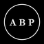
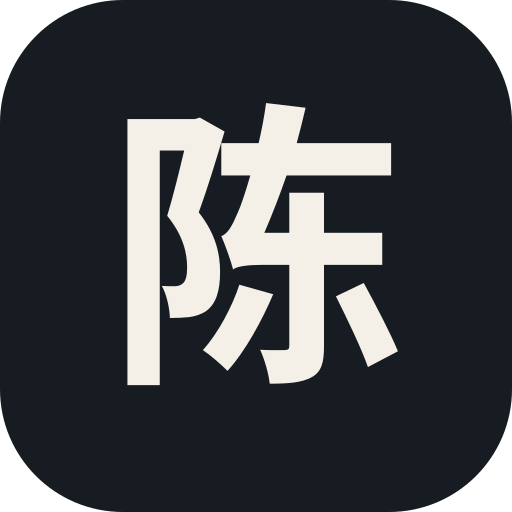
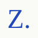
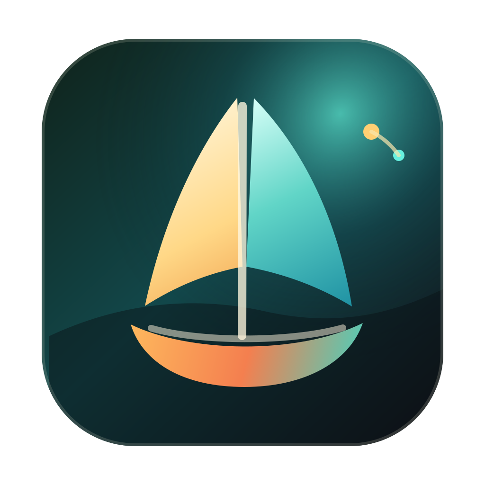
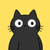

CouCouYa 可可鸭
CouCouYa·coucouya.com
KOSX.ai 社群增长操盘手，分享 AI、Web3、金融与公开学习。
收录真实创作者独立经营的博客与个人作品集 · 平台围墙之外的自由书写与真实表达
KOSX.ai 社群增长操盘手，分享 AI、Web3、金融与公开学习。
正在创业的个人主页，分享餐饮、投资、猎头和 Marketing 的事业经验。
AI 产品开发者，专注信息流自动化、研究效率工具、内容分发系统和 Discord 自动化。
AI 结构与工作流工作室：定制工作流 / Agent / 自动化，兼顾架构、原型与商业物料。
Practical AI systems, market intelligence, reusable Skills and automated workflows.
一个制造业工程师的 AI 探索记录：Agent、自动化、Vibe Coding 与真实构建过程。
室内设计师、设计公司负责人，也在持续构建自己的 AI 产品。
传统企业 AI 系统顾问 / AI 副业陪跑者。用 AI 改造真实业务，用系统拆解学习、副业和增长。
一座深夜还亮着灯的个人小站，收集猫、早餐、文章与观察、工具和奇怪想法。
前汽车工程师，AI Innovation Consultant，记录项目、想法与生活。
一名大三学生的个人数字花园：AI 编程项目、文章笔记与大学成长经历。
一个研0学生的公开重建记录：用 AI 做研究和工具实测，把网站当第二张简历。
资深软件工程师的独立博客：记录 AI Agent、RAG、后端与信息安全的实践笔记与技术取舍。
设计师与摄影师，记录摄影、设计、代码，以及 NAS 自托管与建站实践。
05 后的个人站，只写亲自试过的 AI 工具与实践，记录持续更新的思考与判断。
独立开发者：AI 产品、Web3 安全研究与 SEO 工程，公开构建多条产品线并记录经历。
AI 全栈工程师，Sveltepress 作者，把 LLM 落地到生产合规系统，记录生产 Agent 与开源工具。
00 后开发者的技术博客：FastAPI、LangChain、Flutter 与工程实践的系统整理。
我的个人主页，值得被收录。后续持续更新我的项目
独立开发者的个人博客与项目集(build in public):记录并展示 OctoCounts、EchoPod、QwenASR、Ketsuin 等自己从零构建的项目,以及学习笔记。
一个关注编程、ai和linux的博客

Personal essays on investing, technology, decision-making, and the systems used to research and understand uncertain problems.
Japanese-language technology news, explanations and commentary by Toru Misaki, covering PCs, semiconductors, operating systems, AI and security with links to sources.
Personal projects and essays on software, AI, and markets by Sulayman Bowles, a finance student at UT Austin working in product and growth.
Elliot Hu 的个人网站与技术博客，展示软件工程、AI 与云基础设施相关项目，并持续记录 Agent、Cloudflare、开源与产品工程实践。
Yeee 的數位花園：從 ERP 顧問、後端工程師，一路轉職 AI 傳教士的旅途。記錄每日 TIL、想清楚才寫的長文，以及用 AI agents 打造個人 control tower 的實作筆記。
Personal page for Francis Luz, a software engineer in Dublin. Work history, projects, and what he is building now, kept on Entry.

陈大黄的个人作品与内容陈列站。收录项目、文章和精选帖子。
LTPP 在线开发平台的个人文档站：在线编辑器、代码运行、批量转 PDF 等自研工具的使用说明，以及 hyperlane Rust Web 框架的完整文档。
独立设计师兼开发者的个人作品集，专注设计与开发 AI 原生产品，并记录构建实验与思考。
前端与移动端开发者的个人主页与博客「吐槽大王部落格」，展示塑料碗、雪乃碗、Bilisound 等自研项目。

AI 创业者与产品技术负责人的个人主页，展示 Agent 系统相关的作品、简历与博客，中英双语。
AI 全栈工程师 MuRong 的个人主页，展示 Markra、Openframe、AI Accounts Hub 等自研产品与开源项目。
AI 博主「船长」的个人站点，分享 Agent 驱动的 Obsidian 项目搭建全流程视频与文章，附自研软件与小游戏。
全干工程师、aiwith.me 创始人老杨的个人站：记录十年编程到出海独立开发的历程，附博客与真实运转的作品矩阵。
Systems engineer building software, hardware and the occasional weird thing in between — writing bilingual posts on frontend craft, backend systems and embedded circuits.
Alliot个人博客, 记录工作、学习与生活，内容以 DevOps、云原生和架构设计为主, 也会分享一些硬件折腾。
关于游戏开发、AI领域都兼顾的个人博客。
软件开发者，一边工作一边做自己的产品。在这里记录 AI、产品、技术实践与成长过程。
做产品、做研究、做教育。打造 AI 产品与智能体协作工具，研究语音情感与粤语，记录影视研究与作品。
梧桐雨的独立博客：记录技术、工具、生活与思考。
Rainey 的个人博客，记录技术、产品与 AI，也分享生活、摄影和旅行。
关于 AI、开发与服务部署的中文技术博客。
全栈工程师的个人手记与作品展。记录项目、实验、系统设计与关于 Agent 的深度思考。
预备役设计工程师的数字花园，记录日常日志、日记、技术博文、思考与摘抄。

围绕模型接入、图片生成、API 集成与工程实践的实用文章。
我家有两个三花猫，非常可爱。猫命十五年，她们现在一只七岁一只九岁。我想在还可以的时候让 Gemini 一直记住她们。
一个专注于 X（Twitter）账号排名与数据发现的网站，帮助用户发现值得关注的创作者、独立开发者和优质账号。

不被定义，自在做猫。嘿小喵，用他专属的喵式哲学与生活和解。生活有点黑，但只要我眼里有光，处处皆光明。
写作、AI、开源与生活痕迹放在同一张桌面上：一个仍在生长的教育项目 Plot Ark、career-ops 开源贡献、原创中文写作与随笔，以及零散的案件记录。
没有找到匹配的站点
尝试更换关键词或清除标签筛选